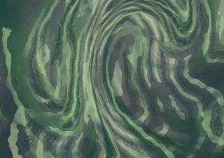
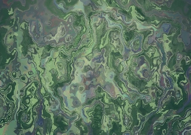
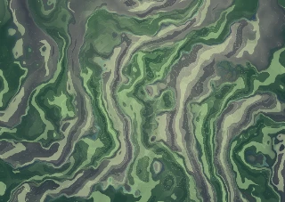
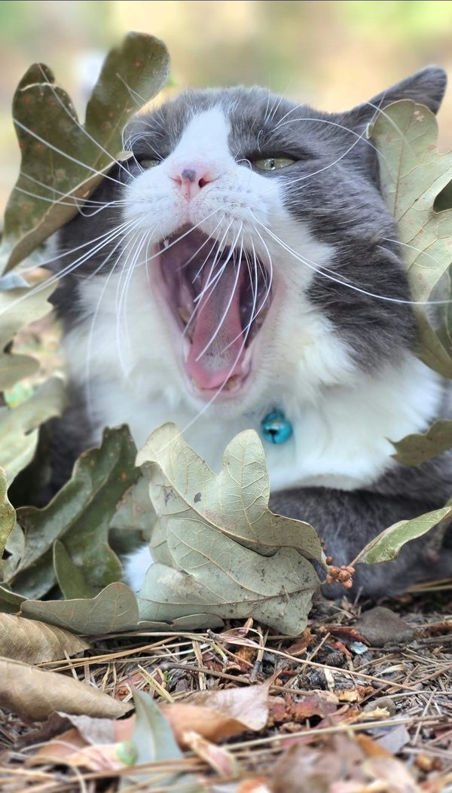

Windows
Version 1.20 for 64-bit Windows 10 and 11. Extract the ZIP and open Temporal Loom.exe.
Download ZIP
Viscous Flow
Phase Refraction
Kelp FoldVersion 1.20 for 64-bit Windows 10 and 11. Extract the ZIP and open Temporal Loom.exe.
Download ZIPVersion 1.17 for Android 8 or later. Open the APK on your device to install.
Download APKSetup, video playback, deck shuffle and reordering, effects, and live output.
Download PDFSearch for stills and playable clips, import local files, or turn your own words into type fragments. Abstract search tries related terms when your first search runs short.
Drive morphs and grain rearrangement with a mic, audio file, or video soundtrack. In Viewfinder, pair a Radio Aporee field recording with visuals from its tagged area.
Go fullscreen and record an MP4. On Windows, detach the display to send the visuals to a second monitor while keeping the controls in front of you.
